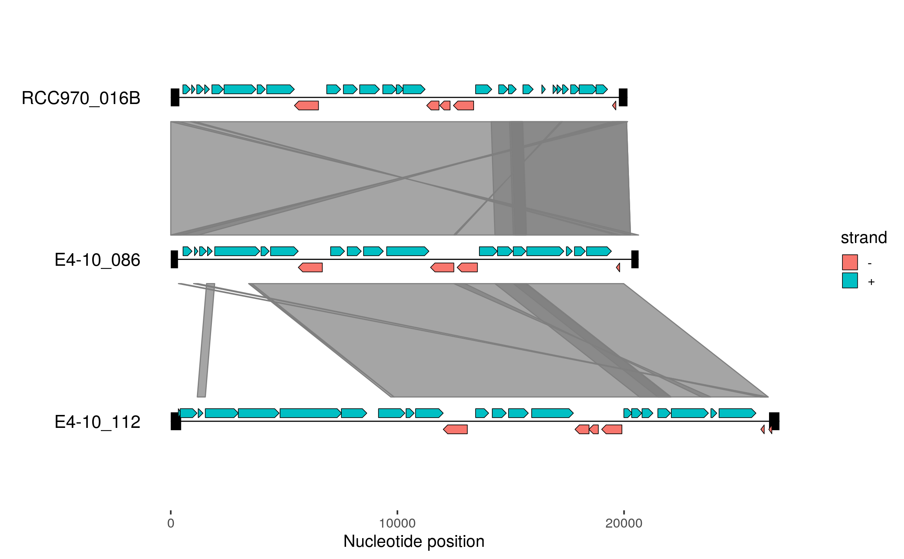

gggenomes.RdSequence data: `read_fai`
gggenomes(seqs = NULL, genes = NULL, features = NULL, links = NULL, ..., infer_bin_id = seq_id, infer_start = min(start, end), infer_end = max(start, end), infer_length = max(start, end), theme = c("clean", NULL), .layout = NULL) layout_genomes(seqs = NULL, genes = NULL, features = NULL, links = NULL, infer_bin_id = seq_id, infer_start = min(start, end), infer_end = max(start, end), infer_length = max(start, end), ...)
| seqs | a table with sequence data (seq_id, bin_id, length) |
|---|---|
| genes | a table or a list of table with gene data to be added as feature tracks. Required columns: seq_id, bin_id, start, end. For a single table, adds the track_id will be "genes". For a list, track_ids are parsed from the list names, or if names are missing from the name of the variable containing each table. |
| features | same as genes, but the single table track_id will default to "features". |
| links | a table or a list of tables with link data to be added as link tracks (columns: from, to, from_start, from_end, to_start, to_end). Same naming scheme as for features. |
| ... | layout parameters passed on to [layout_seqs()] |
| infer_length, infer_start, infer_end, infer_bin_id | used to infer pseudo seqs if only features or links are provided, or if no bin_id column was provided. The expressions are evaluated in the context of the first feature or link track. By default subregions of sequences from the first to the last feature/link are generated. Set `infer_start` to 0 to show all sequences from their true beginning. |
| theme | choose a gggenomes default theme, NULL to omit. |
| .layout | a pre-computed layout from [layout_genomes()]. Useful for developmental purposes. |
gggenomes-flavored ggplot object
gggenomes_layout object
Feature data: `read_gff`
Link data: `read_paf`
# Compare the genomic organization of three viral elements # EMALEs: endogenous mavirus-like elements (example data shipped with gggenomes) gggenomes(emale_seqs[c(1:2,6),], emale_genes, emale_tirs, emale_links) + geom_seq() + geom_bin_label() + # chromosomes and labels geom_feature(size=8) + # terminal inverted repeats geom_gene(aes(fill=strand), position="strand") + # genes geom_link(offset = 0.15) # synteny-blocks